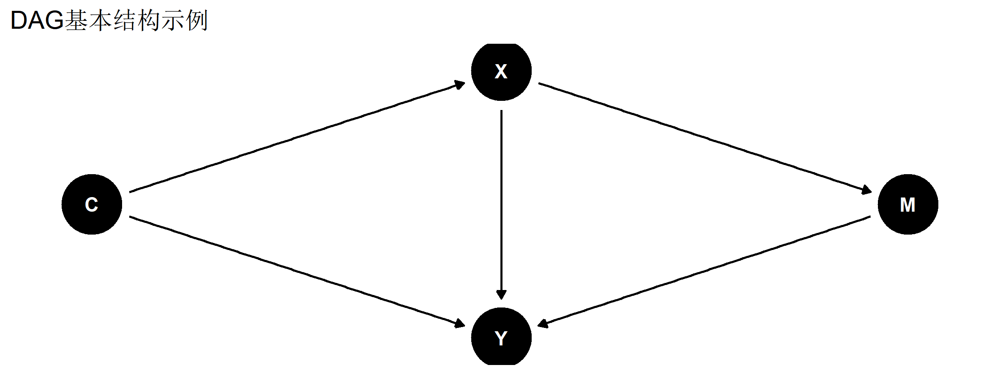
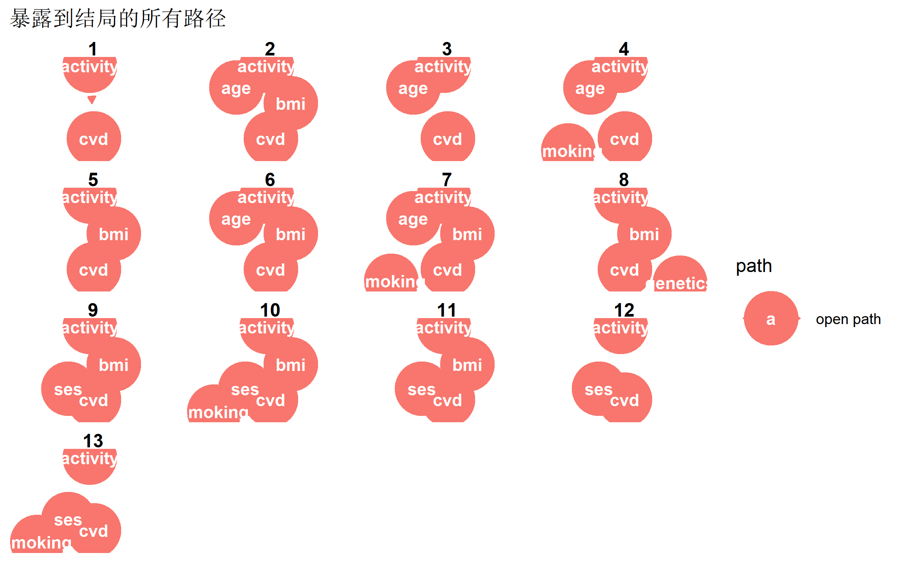
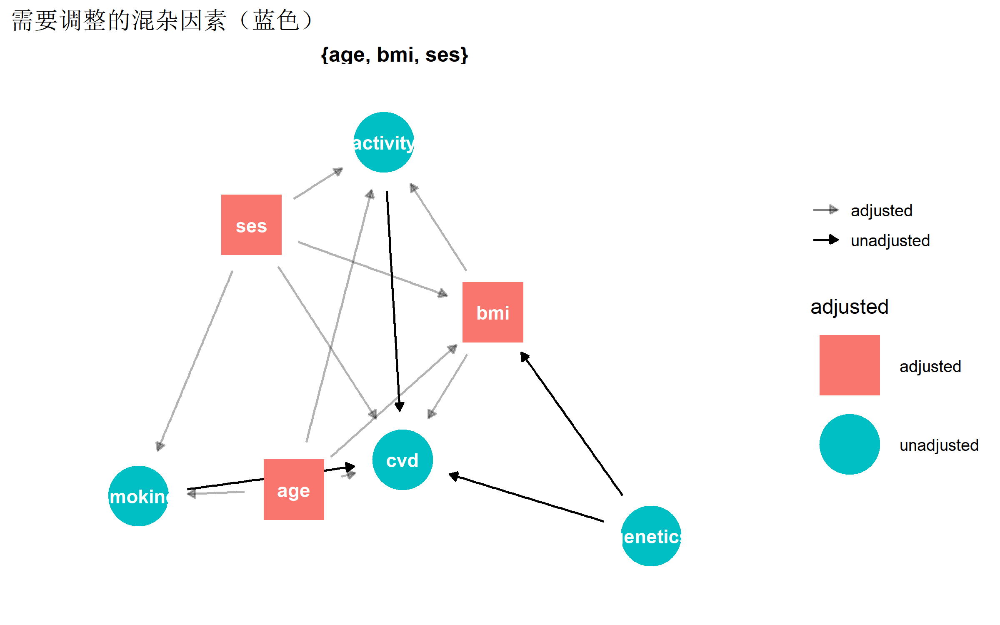
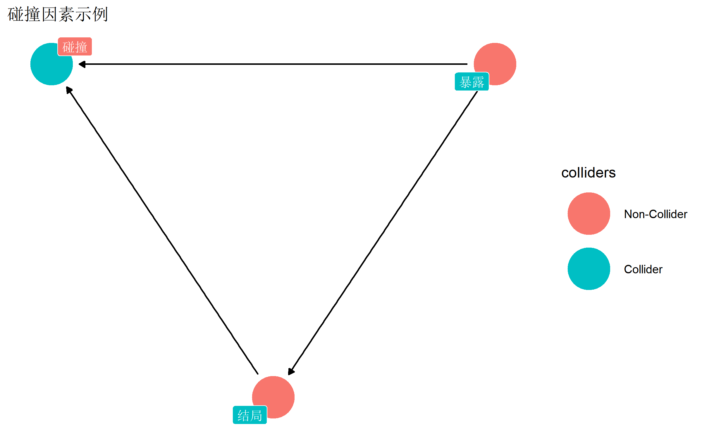
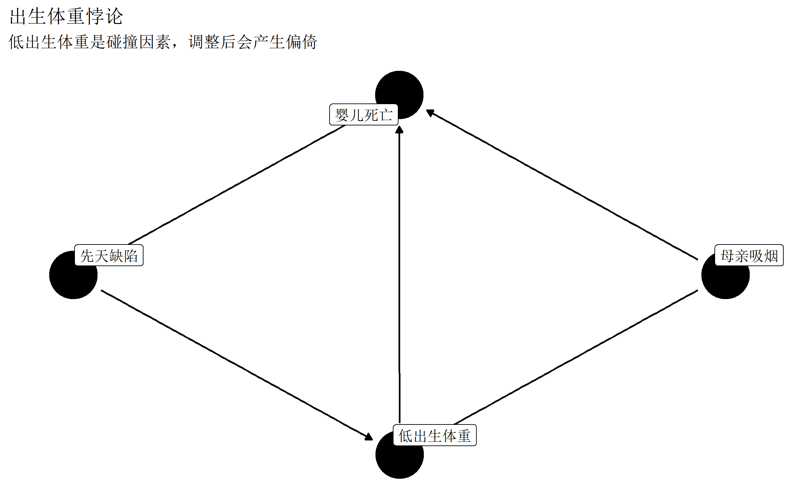
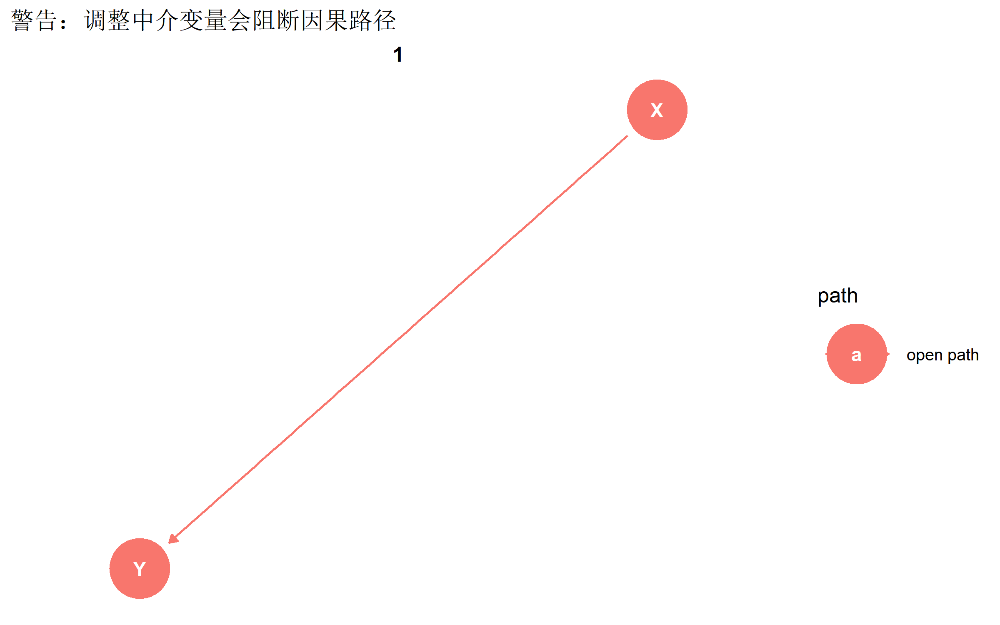
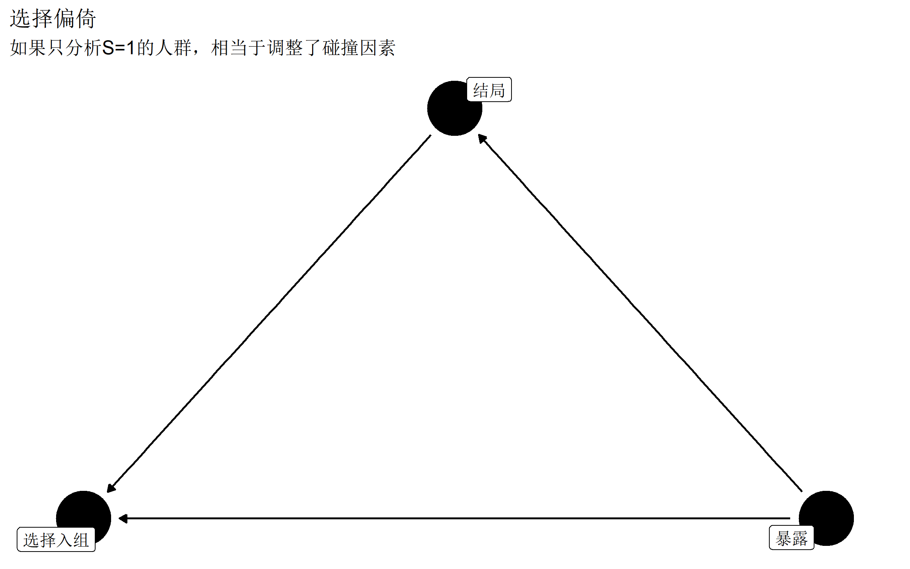

# 安装必要的包
# install.packages(c("dagitty", "ggdag"))
library(dagitty)
library(ggdag)
library(ggplot2)
library(dplyr)DAG 因果图与混杂控制
R语言方法
因果推断
DAG
使用DAG（有向无环图）识别混杂、中介与碰撞偏倚，确定变量调整策略，满足高水平期刊要求。
什么是DAG
DAG（Directed Acyclic Graph，有向无环图） 是表示变量间因果关系的图形工具。在流行病学和因果推断中，DAG 用于：
- 清晰表达因果假设
- 识别混杂因素、中介变量、碰撞因素
- 确定需要调整的最小变量集
- 发现潜在的偏倚来源
为什么需要DAG
| 传统方法 | DAG方法 |
|---|---|
| 基于统计学显著性选择协变量 | 基于因果理论选择协变量 |
| 可能过度调整或调整不足 | 精确识别最小充分调整集 |
| 难以识别碰撞偏倚 | 明确避免调整碰撞因素 |
| 主观性强 | 假设透明可讨论 |
JAMA、BMJ、Lancet 等高水平期刊越来越要求报告研究的因果假设DAG
安装与加载
DAG基础概念
节点类型

| 节点类型 | 定义 | 示例 |
|---|---|---|
| 暴露 (Exposure) | 研究的主要自变量 | 吸烟 |
| 结局 (Outcome) | 研究的因变量 | 肺癌 |
| 混杂 (Confounder) | 同时影响暴露和结局的变量 | 年龄 |
| 中介 (Mediator) | 暴露通过它影响结局的变量 | 肺功能 |
| 碰撞 (Collider) | 同时被两个变量影响的变量 | 住院 |
路径类型
# 创建包含不同路径的DAG
path_dag <- dagify(
Y ~ X + U,
X ~ U,
M ~ X,
Y ~ M,
labels = c(X = "暴露", Y = "结局", U = "混杂", M = "中介"),
exposure = "X",
outcome = "Y"
)
# 识别所有路径
paths(path_dag)$paths
[1] "X -> M -> Y" "X -> Y" "X <- U -> Y"
$open
[1] TRUE TRUE TRUE使用 dagitty 创建DAG
基础语法
# 方法1：使用 dagify 函数
dag1 <- dagify(
outcome ~ exposure + confounder,
exposure ~ confounder,
exposure = "exposure",
outcome = "outcome"
)
# 方法2：使用 dagitty 语法
dag2 <- dagitty("dag {
exposure -> outcome
confounder -> exposure
confounder -> outcome
}")
# 查看DAG结构
dag1dag {
confounder
exposure [exposure]
outcome [outcome]
confounder -> exposure
confounder -> outcome
exposure -> outcome
}实际研究案例
创建一个研究”体力活动与心血管疾病”关系的DAG：
cvd_dag <- dagify(
cvd ~ activity + age + bmi + smoking + ses + genetics,
activity ~ age + ses + bmi,
bmi ~ age + ses + genetics,
smoking ~ ses + age,
labels = c(
cvd = "心血管疾病",
activity = "体力活动",
age = "年龄",
bmi = "BMI",
smoking = "吸烟",
ses = "社会经济地位",
genetics = "遗传因素"
),
exposure = "activity",
outcome = "cvd"
)
# 绑制DAG
ggdag(cvd_dag, text = FALSE, use_labels = "label") +
theme_dag() +
labs(title = "体力活动与心血管疾病的因果图")
识别混杂路径
后门路径
后门路径是从暴露到结局的非因果路径（从暴露的”后门”出发）。这些路径会造成混杂偏倚。
# 识别后门路径
ggdag_paths(cvd_dag) +
theme_dag() +
labs(title = "暴露到结局的所有路径")
# 查看具体路径
paths(cvd_dag)$paths
[1] "activity -> cvd"
[2] "activity <- age -> bmi -> cvd"
[3] "activity <- age -> bmi <- genetics -> cvd"
[4] "activity <- age -> bmi <- ses -> cvd"
[5] "activity <- age -> bmi <- ses -> smoking -> cvd"
[6] "activity <- age -> cvd"
[7] "activity <- age -> smoking -> cvd"
[8] "activity <- age -> smoking <- ses -> bmi -> cvd"
[9] "activity <- age -> smoking <- ses -> bmi <- genetics -> cvd"
[10] "activity <- age -> smoking <- ses -> cvd"
[11] "activity <- bmi -> cvd"
[12] "activity <- bmi <- age -> cvd"
[13] "activity <- bmi <- age -> smoking -> cvd"
[14] "activity <- bmi <- age -> smoking <- ses -> cvd"
[15] "activity <- bmi <- genetics -> cvd"
[16] "activity <- bmi <- ses -> cvd"
[17] "activity <- bmi <- ses -> smoking -> cvd"
[18] "activity <- bmi <- ses -> smoking <- age -> cvd"
[19] "activity <- ses -> bmi -> cvd"
[20] "activity <- ses -> bmi <- age -> cvd"
[21] "activity <- ses -> bmi <- age -> smoking -> cvd"
[22] "activity <- ses -> bmi <- genetics -> cvd"
[23] "activity <- ses -> cvd"
[24] "activity <- ses -> smoking -> cvd"
[25] "activity <- ses -> smoking <- age -> bmi -> cvd"
[26] "activity <- ses -> smoking <- age -> bmi <- genetics -> cvd"
[27] "activity <- ses -> smoking <- age -> cvd"
$open
[1] TRUE TRUE FALSE FALSE FALSE TRUE TRUE FALSE FALSE FALSE TRUE TRUE
[13] TRUE FALSE TRUE TRUE TRUE FALSE TRUE FALSE FALSE FALSE TRUE TRUE
[25] FALSE FALSE FALSE识别混杂因素
# 绘制混杂因素
ggdag_adjustment_set(cvd_dag, shadow = TRUE) +
theme_dag() +
labs(title = "需要调整的混杂因素（蓝色）")
确定调整集
最小充分调整集
# 计算最小充分调整集
adjustmentSets(cvd_dag, effect = "total"){ age, bmi, ses }# 可视化调整集
ggdag_adjustment_set(cvd_dag) +
theme_dag() +
scale_color_manual(values = c("#4f46e5", "#ef4444")) +
labs(title = "最小充分调整集")
总效应 vs 直接效应
# 总效应：activity -> cvd 的所有路径
total_adj <- adjustmentSets(cvd_dag, effect = "total")
cat("总效应调整集:\n")总效应调整集:print(total_adj){ age, bmi, ses }# 直接效应：排除中介路径
direct_adj <- adjustmentSets(cvd_dag, effect = "direct")
cat("\n直接效应调整集:\n")
直接效应调整集:print(direct_adj){ age, bmi, ses }碰撞偏倚
什么是碰撞
当一个变量同时被两个变量影响时，它就是碰撞因素（Collider）。调整碰撞因素会打开原本关闭的路径，造成偏倚。
# 创建包含碰撞的DAG
collider_dag <- dagify(
C ~ X + Y,
Y ~ X,
labels = c(X = "暴露", Y = "结局", C = "碰撞"),
exposure = "X",
outcome = "Y"
)
# 标记碰撞
ggdag_collider(collider_dag, text = FALSE, use_labels = "label") +
theme_dag() +
labs(title = "碰撞因素示例")
经典案例：出生体重悖论
# 出生体重悖论
birthweight_dag <- dagify(
death ~ smoking + lowbw + defect,
lowbw ~ smoking + defect,
labels = c(
death = "婴儿死亡",
smoking = "母亲吸烟",
lowbw = "低出生体重",
defect = "先天缺陷"
),
exposure = "smoking",
outcome = "death"
)
ggdag(birthweight_dag, text = FALSE, use_labels = "label") +
theme_dag() +
labs(
title = "出生体重悖论",
subtitle = "低出生体重是碰撞因素，调整后会产生偏倚"
)
d-分离规则
d-分离（d-separation） 是判断两变量在给定条件下是否独立的规则。
三条基本规则
| 结构 | 形式 | 自然状态 | 调整B后 |
|---|---|---|---|
| 链 (Chain) | A → B → C | 关联 | 独立 |
| 叉 (Fork) | A ← B → C | 关联 | 独立 |
| 碰撞 (Inverted Fork) | A → B ← C | 独立 | 关联 |
检验d-分离
# 创建测试DAG
test_dag <- dagitty("dag {
X -> M -> Y
X -> Y
C -> X
C -> Y
}")
# 检验条件独立性
impliedConditionalIndependencies(test_dag)C _||_ M | XDAG的验证
检验可测试的蕴含
如果DAG正确，某些条件独立关系应该在数据中成立：
# 模拟数据
set.seed(42)
n <- 1000
C <- rnorm(n)
X <- 0.5 * C + rnorm(n)
M <- 0.7 * X + rnorm(n)
Y <- 0.3 * X + 0.6 * M + 0.4 * C + rnorm(n)
sim_data <- data.frame(C, X, M, Y)
# 根据DAG，调整C后，X和Y在给定M时应该条件独立
# 简化测试：偏相关应该接近0
partial_cor <- cor(
residuals(lm(X ~ M + C, data = sim_data)),
residuals(lm(Y ~ M + C, data = sim_data))
)
cat("调整M和C后，X与Y的偏相关:", round(partial_cor, 3), "\n")调整M和C后，X与Y的偏相关: 0.298 论文中的DAG报告
报告格式
# 创建论文级别的DAG
publication_dag <- dagify(
outcome ~ exposure + age + sex + ses + comorbidity,
exposure ~ age + sex + ses,
comorbidity ~ age + sex,
labels = c(
outcome = "主要结局",
exposure = "暴露因素",
age = "年龄",
sex = "性别",
ses = "社会经济\n地位",
comorbidity = "合并症"
),
exposure = "exposure",
outcome = "outcome"
)
# 设置节点位置（更清晰的布局）
coords <- list(
x = c(exposure = 0, outcome = 2, age = 0.5, sex = 1, ses = 1.5, comorbidity = 1),
y = c(exposure = 0, outcome = 0, age = 1, sex = 1, ses = 1, comorbidity = -1)
)
ggdag(publication_dag, text = FALSE, use_labels = "label") +
theme_dag_blank() +
labs(
title = "图1. 研究假设的有向无环图（DAG）",
caption = "节点表示变量，箭头表示假设的因果方向"
) +
theme(
plot.title = element_text(face = "bold", size = 14),
plot.caption = element_text(hjust = 0)
)
DAG报告的标准语言
**因果假设**
图1展示了本研究假设的因果关系有向无环图（DAG）。基于先验知识和文献回顾，
我们假设年龄、性别和社会经济地位是暴露因素和主要结局之间的混杂因素。
合并症被认为是暴露通过影响健康状态到达结局的中介变量，因此在主分析中
未予调整。
根据后门准则，最小充分调整集为{年龄，性别，社会经济地位}。敏感性分析
中，我们进一步调整合并症以估计暴露的直接效应。在线工具
DAGitty网站
DAGitty 提供可视化的DAG编辑器：
- 拖拽创建节点
- 连线定义因果关系
- 自动计算调整集
- 导出R代码
# 从DAGitty网站导入DAG
online_dag <- downloadGraph("dagitty.net/mxXyzzy")常见错误
1. 调整中介变量
# 错误示例：想估计总效应但调整了中介
bad_adjustment <- dagify(
Y ~ X + M,
M ~ X,
exposure = "X",
outcome = "Y"
)
# 如果调整M，会阻断X->M->Y路径
ggdag_paths(bad_adjustment, adjust_for = "M") +
theme_dag() +
labs(title = "警告：调整中介变量会阻断因果路径")
2. 调整碰撞因素
# 开放本应关闭的关联
ggdag_dseparated(collider_dag, controlling_for = "C") +
theme_dag() +
labs(title = "警告：调整碰撞因素打开了偏倚路径")
3. 选择偏倚
当样本选择与暴露和结局都相关时，会产生选择偏倚：
selection_dag <- dagify(
S ~ X + Y,
Y ~ X,
labels = c(X = "暴露", Y = "结局", S = "选择入组"),
exposure = "X",
outcome = "Y"
)
ggdag(selection_dag, text = FALSE, use_labels = "label") +
theme_dag() +
labs(
title = "选择偏倚",
subtitle = "如果只分析S=1的人群，相当于调整了碰撞因素"
)
总结
| 任务 | 函数/方法 |
|---|---|
| 创建DAG | dagify() 或 dagitty() |
| 可视化 | ggdag() |
| 识别调整集 | adjustmentSets() |
| 识别路径 | paths() |
| 检验d-分离 | impliedConditionalIndependencies() |
| 识别碰撞 | ggdag_collider() |
推荐资源
- DAGitty 在线工具
- ggdag 文档
- Hernán & Robins《因果推断》
- Greenland et al. (1999) Epidemiology - DAG基础论文